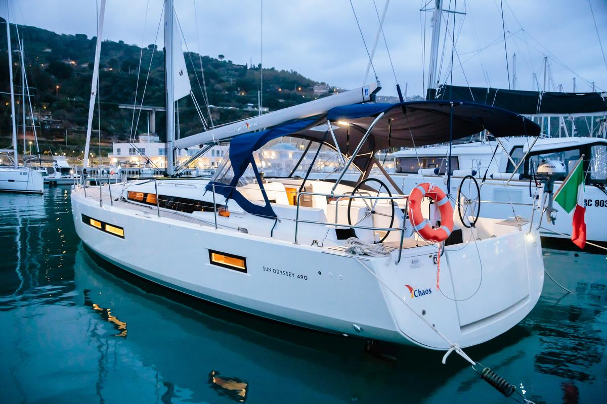

Capo d'Orlando → Vulcano → Panarea → Stromboli → Salina → Lipari → Capo d'Orlando
День за днём
Чек-ин и сбор команды
Старт и переход на Вулкано
Через Cala Junco на Панарею
Фумаролы и переход к вулкану
Извержения на рассвете и переход на Салину
Pollara и переход на Липари
Возвращение и сдача лодки
Переезд на виллу
Стоянки
Расходы
| Sun Odyssey 490 «Chaos», 6 дней | 2 754 € |
| Обязательные доплаты бельё, газ, уборка, тузик | 620 € |
| Страховка депозита | 490 € |
| Итого чартер, на всех | 3 863,98 € |
| Дата | Марина | € |
|---|---|---|
| 27.09 | Baia Levante (Vulcano) | 190 |
| 28.09 | Sea Panarea (буй) | 100 |
| 29.09 | Del Gabbiano (буй) | 90 |
| 30.09 | Marina Salina (Marinedì) | 92,5 |
| 01.10 | EOLMARE (Lipari) | 100 |
| Итого стоянки | 572,5 | |
| Tourist tax (1–3 €/чел/ночь × 12 чел) | ~100–150 € |
| Топливо (~200 л за неделю) | ~350–400 € |
| Провиант (закупка в Capo d'Orlando) | по договорённости |
| Вилла делится на всех, кроме Ани Б | пока неизвестно |
| Чартер | 3 863,98 € |
| Стоянки | 572,5 € |
| Tourist tax | ~100–150 € |
| Топливо | ~350–400 € |
| Всего расходов, на всех | ~4 886–4 986 € |
Сборы
Для тех, кто первый раз

Где поесть
Рейтинги Google на конец июля 2026 — к сентябрю могут немного сдвинуться. Названия ведут на Google Maps. На двенадцать человек бронировать надо везде: залы на островах маленькие.
Salina, свободный день IV
Malvasia delle Lipari — сладкое пассито: виноград не давят свежим, а подвяливают на солнце на тростниковых циновках. По регламенту DOC это мальвазия в чистом виде или с добавкой до 5% Corinto Nero, местного чёрного бессемянного винограда. Пьют его после еды, к сырам и сладкому, а не под рыбу за ужином. У большинства хозяйств есть и сухие белые, так что на дегустации дают и то и то. Приходим в марину к 10–11 утра, так что вторая половина дня свободна. Даты закрытия сезона не публикует никто — остров сворачивается к середине октября, спрашивать про 30 сентября прямым вопросом.
Двенадцать человек — много для семейного хозяйства, стол может не влезть. В Malfa от Santa Marina 7 минут на такси, около 20 €, но на всех нужно два девятиместных минивэна туда и обратно; в Lingua ехать заметно ближе.
Когда летим
Когда летим